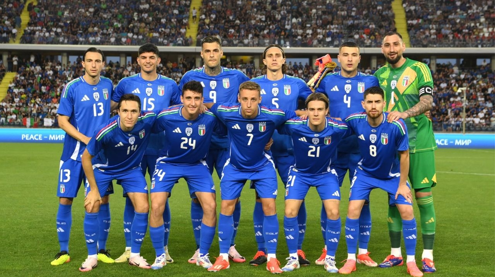

Seleção Italiana na UEFA Eurocopa
A Seleção Italiana vem a Eurocopa 2024 com o objetivo de vencer o tricampeonato, após vencer em 1968 e 2020. A Seleção vem de uma fase complicada, tendo ficado de fora da Copa do Mundo 2022 e com poucos jogadores de grande qualidade no time, como Chiesa, Barella e Donnaruma.
